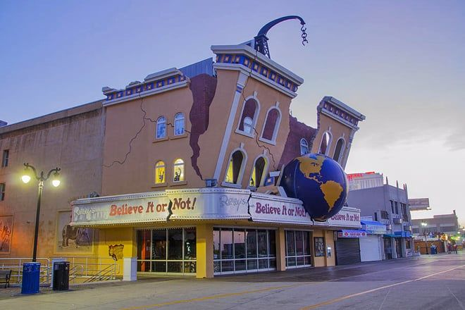

Dubbed as The World’s Playground, Atlantic City is one of the top destinations for family vacations.
There are about 27 million tourists who visit the city per year.
All the attractions that surround Atlantic City are easily accessible through their Atlantic City Boardwalk Tram Service tramcars.
There are countless places to go to in the city, such as beaches, amusement parks, casinos, and more.
Everyone will surely be entertained throughout your trip!
Discover what awaits you and your family when you visit The World’s Playground by reading the list of fun things to do in Atlantic City with kids, below.

Ripleys BelieveItOrNot
In 1870, the widely known Atlantic City Boardwalk became the first boardwalk in the United States — perhaps the most visited locations in the city.
It’s a one-stop-shop tourist spot where you can dine, shop, and do plenty of family activities in Atlantic City.
Why Your Family Should Go
Enjoy the fresh air, the view of the ocean, and do a bit of shopping while strolling along the Atlantic City Boardwalk with the whole family.